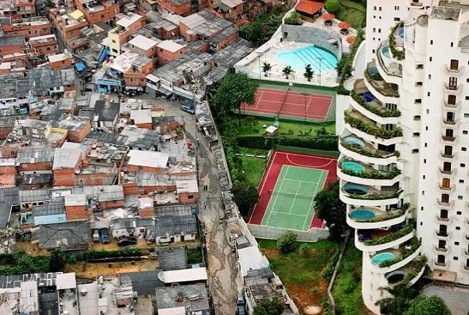
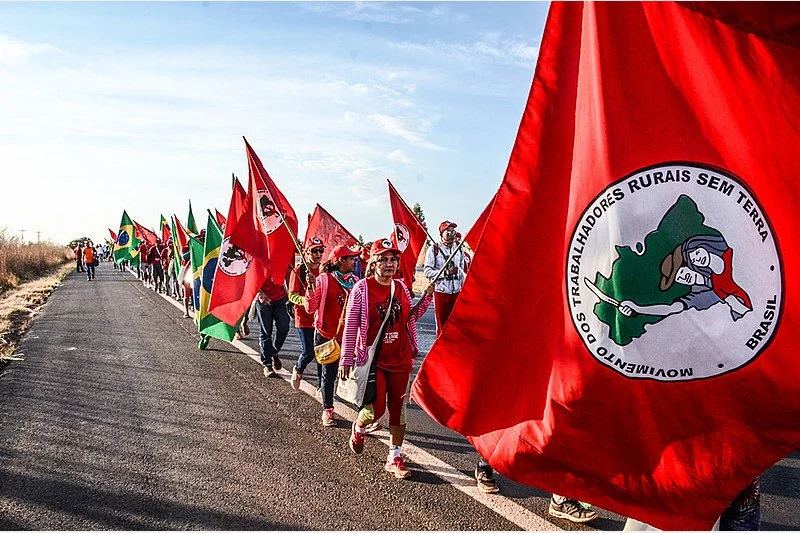
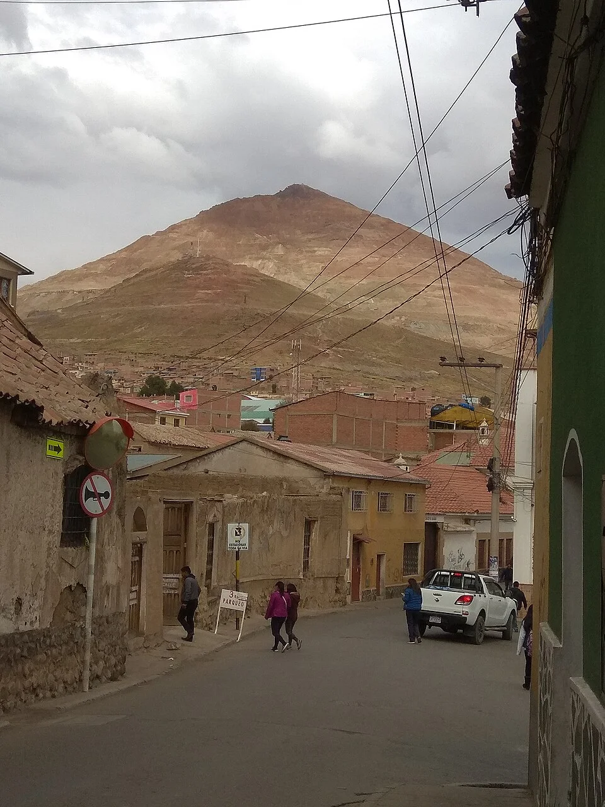
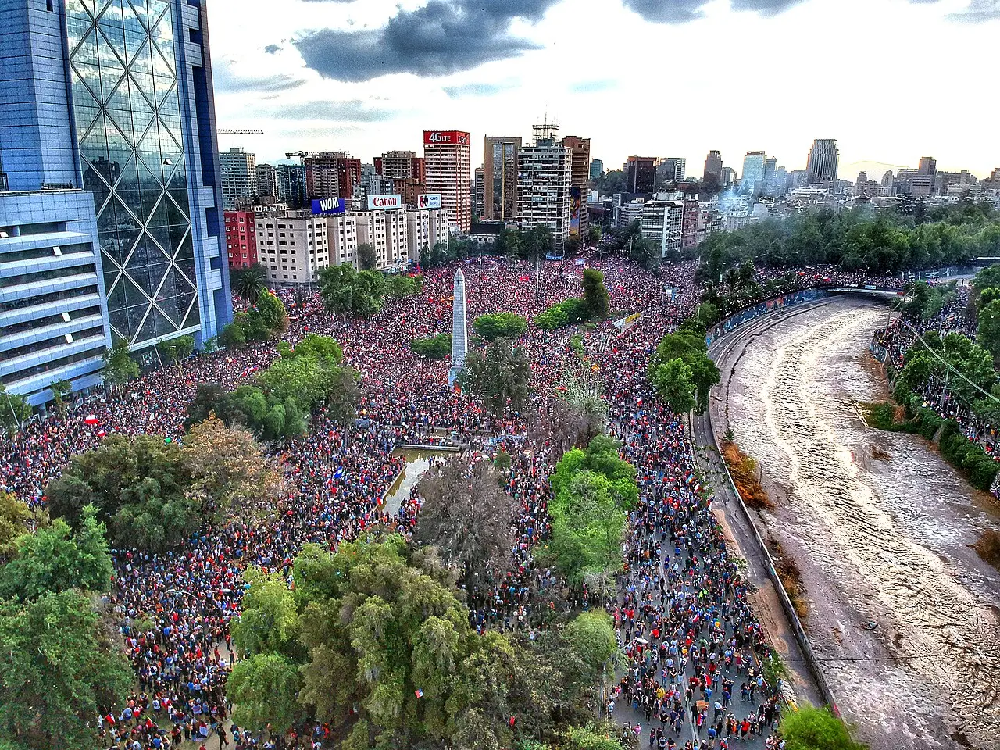
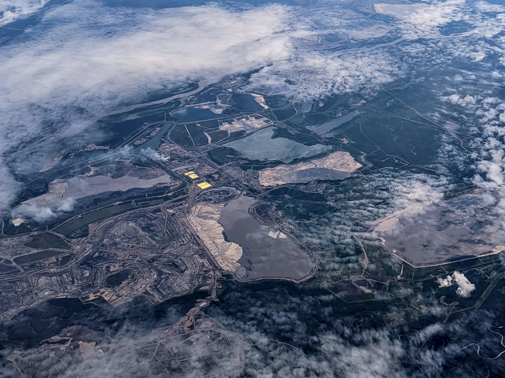

![Les Amériques vues de l'espace]()
L'Amérique est un continent démesuré. Elle s'étire sur près de 15 000 km du nord au sud, du cap Columbia, au Canada (83° N), jusqu'au cap Horn, au Chili (56° S).
Ce continent est traversé par une double tension. D'un côté, des rêves d'unification reviennent sans cesse ; de l'autre, la fragmentation est très forte, qu'elle soit géographique, sociale, politique ou culturelle.
🗺️ Clivage géographique
Le continent se divise en trois ensembles : l'Amérique du Nord, l'Amérique centrale (avec les Caraïbes) et l'Amérique du Sud.
🎭 Clivage culturel
Il oppose une Amérique anglo-saxonne au nord à une Amérique latine au sud, héritière des colonisations ibériques.
L'expression est récente : elle est forgée dans la France de Napoléon III (années 1850-1860), au nom d'une « latinité » commune opposée au monde anglo-saxon. Elle sert aussi à justifier l'intervention française au Mexique (1861-1867). Le Brésil, lusophone, ne se reconnaît d'ailleurs pas spontanément dans ce terme.
La conscience d'appartenir à un Nouveau Monde naît au moment des indépendances. Trois épisodes fondateurs la nourrissent :
- La guerre d'indépendance des États-Unis (1776-1783).
- La révolte d'Haïti (1791), qui aboutit en 1804 à la première république noire.
- Les révolutions d'Amérique latine conduites par Simón Bolívar, le Libertador, et son projet de Grande Colombie.
En 1823, la doctrine Monroe (« l'Amérique aux Américains ») marque la défiance des États-Unis envers l'Europe. Elle exprime aussi leur volonté de dominer le continent.
Cette logique d'ensemble se prolonge avec l'OEA (Organisation des États américains), fondée à Bogota en 1948. Mais l'unité continentale se heurte vite à des résistances : la révolution cubaine de 1959 (Cuba est exclue de l'OEA en 1962), puis l'opposition du Brésil et du Venezuela à la tutelle nord-américaine.
Aujourd'hui, l'OEA est peu mobilisée. Pour relancer la coopération, Bill Clinton inaugure en 1994 à Miami le premier Sommet des Amériques.
Organisé par Joe Biden, le sommet exclut Cuba, le Venezuela et le Nicaragua. Plusieurs chefs d'État, dont le président mexicain López Obrador, le boycottent. La rencontre révèle davantage la fragmentation du continent que son unité.
Le continent compte par ailleurs un nombre record de 16 organisations régionales, plus qu'aucun autre au monde. Elles traduisent une volonté d'intégration, mais leurs projets se concurrencent et se chevauchent.
L'Amérique oscille en permanence entre des projets d'unité (panaméricanisme, OEA, sommets) et une fragmentation persistante (rivalités, anti-américanisme, organisations concurrentes).
L'indice de développement humain (IDH) fait apparaître une ligne de fracture nette. Les États-Unis et le Canada dépassent 0,9, alors que la plupart des autres États se situent entre 0,7 et 0,8.
Ce clivage entre Amérique anglo-saxonne et Amérique latine mérite toutefois d'être nuancé :
En moyenne, un Latino-Américain peut espérer vivre 74 ans (2022). Les enfants sont scolarisés environ 15 ans, mais les adultes de plus de 25 ans ne l'ont été qu'environ 9 ans. Le revenu national brut atteint environ 14 521 $ par habitant (en PPA).
Le PIB par habitant confirme ce clivage entre les deux Amériques :
Indicateur mis au point en 1912 par le statisticien italien Corrado Gini. Il mesure la répartition des revenus ou des richesses dans une population, de 0 (égalité parfaite) à 1 (une seule personne détient tout).
Selon cet indice, 9 des 20 pays les plus inégalitaires du monde sont latino-américains, parmi lesquels le Brésil et la Colombie.
Le Rapport sur les inégalités mondiales 2022 (Chancel et al.) le confirme. En Amérique latine, les 10 % les plus riches captent 55 % des revenus, contre 36 % en Europe.
💰 Les 10 % les plus riches
Ils détiennent 77 % du patrimoine en Amérique latine, contre 58 % en Europe.
🪙 La moitié la plus pauvre
Elle ne possède que 1 % du patrimoine : la concentration des richesses est extrême.
La CEPAL (Commission économique de l'ONU pour l'Amérique latine et les Caraïbes) compte encore environ 32 % de pauvres en 2021-2022. Cela représente 200 millions de personnes, dont 80 millions en extrême pauvreté.
Le CONEVAL a d'ailleurs été supprimé en 2025 : ses missions ont été transférées à l'INEGI, l'institut national de statistique.

À l'échelle nationale, un Sud et un Sud-Est riches et développés s'opposent à un Nordeste et à une Amazonie plus pauvres.
À l'échelle locale, la pauvreté existe aussi au sud. Le géographe Hervé Théry montre qu'à São Paulo, le centre est riche et diplômé, tandis que les périphéries sont plus pauvres et moins éduquées.
Une photographie de Tuca Vieira (2004) a longtemps illustré les manuels scolaires. On y voit la favela de Paraisópolis jouxtant un immeuble cossu doté de piscines sur ses balcons : la juxtaposition des extrêmes reste une réalité actuelle.
D'autres lieux reflètent ces contrastes, comme l'immeuble Copan d'Oscar Niemeyer à São Paulo, où cohabitent des populations très variées. On retrouve le même phénomène à Santa Fe, à Mexico, photographié par Johnny Miller (projet Unequal Scenes).
L'Amérique latine a une longue tradition de séparation physique des groupes sociaux, renforcée par la colonisation. Toutefois, la ségrégation socio-spatiale n'y atteint pas les niveaux observés aux États-Unis ou en Afrique du Sud.
La ségrégation latino-américaine est ancienne, mais moins extrême qu'aux États-Unis.
À partir des années 1950, l'exode rural provoque une forte croissance urbaine. En périphérie des villes se développe un habitat populaire informel, construit hors de toute planification.
Ces quartiers au plan labyrinthique contrastent avec le plan en damier des villes planifiées. Ils finissent peu à peu par être absorbés dans la nappe urbaine.
Pour les classes populaires, vivre en favela peut n'être qu'une étape d'un itinéraire résidentiel, liée à un moment de la vie (naissance d'un enfant, perte d'emploi).
Ces espaces sont très hétérogènes et doivent être lus de manière dynamique. Ils connaissent consolidation, régularisation, densification et valorisation : les quartiers informels tendent à devenir formels.
À partir des années 2000, les programmes de logement social se généralisent. Le modèle, imaginé au Chili, est repris au Brésil sous Lula avec le programme « Minha Casa, Minha Vida » (« Ma maison, ma vie »).
Leur principale limite tient à leur éloignement des emplois et des services. À Rio, avant la Coupe du monde 2014 et les Jeux olympiques de 2016, de vastes expulsions ont déplacé des habitants de favelas vers ces logements.
L'objectif était d'invisibiliser la pauvreté. Les favelas ont été « pacifiées » par les UPP (Unités de police pacificatrice), créées en 2008.
D'après Blakely et Snyder (Fortress America, 1997), c'est un quartier résidentiel fermé par une grille ou un mur, dont l'accès est contrôlé et réservé aux résidents et à leurs invités, et où l'espace public est privatisé (rues, parcs, terrains de jeu). C'est une forme de ségrégation volontaire.
Ceux qui s'y installent recherchent la distinction sociale, la tranquillité, la sécurité et le confort. Autour de Buenos Aires, les clubs de campo (country clubs) en sont un bon exemple.
Planifiée pour plus de 100 000 habitants, elle possède ses zones résidentielles, ses écoles, deux zones commerciales et son propre réseau d'eau potable. Elle se trouve pourtant dans la municipalité de Tigre, où 23 % des 300 385 habitants sont considérés comme socialement vulnérables.
Sabrina Acosta Schnell parle de « mini-villes privées ». Elles imitent l'urbanisme traditionnel (places, églises, fontaines, marchés) et mêlent logements de standing, loisirs, commerces et bureaux.
Ces espaces ne sont pas clôturés, mais leur accès est réservé de fait à une clientèle aisée, sous vidéosurveillance.
À Santiago du Chili, « Sanhattan » (Santiago + Manhattan) forme le cœur du CBD, dans le « cône oriental de richesse ». Ce centre financier de rang continental est aussi le lieu de résidence des catégories aisées.
🇲🇽 Mexico
Un gradient radioconcentrique : plus on s'éloigne du centre, plus la pauvreté augmente. S'y ajoute une forte opposition entre un ouest-sud-ouest favorisé (axes vers Coyoacán, Santa Fe et Ciudad Satélite) et un est-nord-est populaire (Chalco, Iztapalapa, Ecatepec).
🇵🇪 Lima
La ville s'organise en cônes de développement le long des vallées, autour d'un centre-sud aisé (San Isidro, Miraflores, Barranco). En banlieue, des organisations sociales ont bâti des quartiers entiers sur des terrains publics, comme Villa El Salvador.
Depuis une vingtaine d'années, la financiarisation est la principale grille de lecture de la division sociale de l'espace. Elle repose sur la raréfaction du foncier, la marchandisation du logement et la bancarisation croissante des sociétés.
Elle s'appuie aussi sur des montages financiers complexes entre États, banques et promoteurs. Deux conséquences en découlent :
- Une verticalisation et une densification des centres et péricentres, où le foncier prend de la valeur.
- Une nouvelle vague d'étalement urbain en périphérie depuis les années 2000, contraire au modèle de ville compacte promu par l'ODD 11.
Transformation d'un quartier populaire par l'arrivée de catégories plus aisées, qui fait monter les prix et chasse les habitants modestes. En Amérique latine, elle accompagne le retour des capitaux dans les centres et s'amplifie avec la financiarisation de l'immobilier, notamment touristique.
À Mexico, la maire de l'époque, Claudia Sheinbaum (présidente du Mexique depuis 2024), s'est associée à l'Unesco et à Airbnb. L'objectif était de faire de la ville une capitale du tourisme numérique, attirant les digital nomads.
Il en a résulté d'importantes manifestations contre la spéculation, notamment en 2025 : hausse des loyers et des prix, pression fiscale accrue et surtout expulsions massives de locataires.
Le géographe décrit ces métropoles comme des « villes archipels » : des villes fragmentées, faites d'îlots juxtaposés qui communiquent peu entre eux.
La métropole latino-américaine est un archipel d'îlots qui communiquent peu.
Depuis les années 1970, le métro de Mexico réserve des wagons aux femmes pour lutter contre le harcèlement. L'Amérique latine connaît aussi des taux de féminicides parmi les plus élevés au monde, que dénonce le mouvement Ni una menos, né en Argentine en 2015.
Cette structure oppose les minifundia (moins de 5 ha, surtout dans le Nordeste) aux latifundia (plus de 100 ha, comme dans le Mato Grosso). Elle est directement héritée de la colonisation.
Politique visant une redistribution plus équitable des terres. La question revient sans cesse sur le continent, mais de nombreuses tentatives (Pérou, Équateur, Brésil…) ont échoué.
La réforme agraire mexicaine fait figure d'exception. Précoce et relativement réussie, elle a longtemps servi de modèle en Amérique latine.
Elle se construit autour du mot d'ordre « Terre et liberté » d'Emiliano Zapata, dans un pays aux mains de très grands propriétaires.
La réforme limite la propriété et divise les latifundia. Elle crée les ejidos, terres d'État exploitées collectivement par les paysans sans droit de propriété, à côté de petites propriétés privées.
La propriété collective, jusque-là préservée, peut désormais être privatisée.
Le sous-commandant Marcos reprend le cri de Zapata au Chiapas, où les paysans indiens n'ont jamais obtenu de terres.
Le bilan est donc positif sur le plan social. Mais la petite taille des exploitations et le flou des droits de propriété ont freiné sa réussite économique.

Au Brésil, le MST (Mouvement des travailleurs ruraux sans terre, fondé en 1984) pèse sur les gouvernements de Fernando Henrique Cardoso puis de Lula. Aidés par la baisse du prix de la terre après le Plan Real (1994), ils lancent une vaste campagne de colonisation.
Des milliers de familles sont installées dans des assentamentos, sur des terres expropriées ou publiques. Mais celles-ci se trouvent surtout en Amazonie, loin de tout, si bien que les invasions illégales continuent dans les régions plus attractives.
Au Brésil, la population blanche est surreprésentée dans le Sud-Est développé, les populations métisses et noires dans le Nordeste, plus pauvre.
Tous les États d'Amérique partagent une origine commune : ils sont issus d'un colonialisme pionnier européen, amorcé avec l'arrivée des Européens en 1492.
Conquête de territoires par la force et installation d'une population venue d'Europe, les colons, pour exploiter les ressources naturelles. Elle s'accompagne de la domination des populations déjà présentes, aujourd'hui appelées peuples autochtones, Premières Nations ou Amérindiens.
Pourtant, la colonisation ne prend pas la même forme au Nord et au Sud :
🏡 Amérique du Nord
Une colonisation de peuplement : les colons viennent bâtir une nouvelle société.
⛏️ Amérique latine
Une colonisation prédatrice : elle vise l'enrichissement des empires espagnol et portugais et l'évangélisation des populations.
Menée dans l'esprit de la Reconquista, la conquête ibérique impose le christianisme et efface les traditions précolombiennes. Des villes entières sont détruites, comme Tenochtitlan, sur laquelle est bâtie Mexico : on parle d'ethnocide.
L'historien américain Alfred Crosby parle d'« impérialisme écologique » (1986). Il désigne ainsi la destruction des écologies locales du Nouveau Monde par la colonisation (mines d'or et d'argent, plantations).
Circulation intercontinentale de plantes, d'animaux et de maladies déclenchée par la découverte de l'Amérique. Elle bouleverse l'agriculture et l'alimentation des deux côtés de l'Atlantique, et transforme les relations entre nature et sociétés à l'échelle mondiale.
🌽 Des Amériques vers le reste du monde
Plantes : pomme de terre, tomate, maïs, manioc, haricots, cacao, tabac, vanille, cacahuète… Animaux : la dinde. Maladies : peut-être la syphilis.
🐎 Du reste du monde vers les Amériques
Plantes : blé, riz, café, canne à sucre, agrumes, vigne, banane… Animaux : bovins, porcs, chevaux. Maladies : variole, grippe, rougeole, typhus, fièvre jaune…

La colonisation repose sur l'extractivisme, c'est-à-dire l'extraction massive des ressources minières et agricoles. La montagne d'argent de Potosí (le Cerro Rico, en Bolivie) en est le symbole.
Elle repose aussi sur la grande plantation, venue de la péninsule Ibérique et des îles atlantiques. Fondée sur la monoculture, notamment celle de la canne à sucre, elle est très rentable et utilise le travail esclave.
Les conséquences environnementales sont lourdes : déforestation, disparition des cultures vivrières, érosion et épuisement des sols. Les colonies deviennent en outre dépendantes des métropoles, à qui elles vendent le sucre et achètent leur nourriture.
Notion proposée par Donna Haraway et Anna Tsing. Selon elles, l'ère des bouleversements environnementaux ne commence pas avec la révolution industrielle, mais avec le système de plantation colonial : monoculture, esclavage et destruction des écosystèmes.
Les États américains se forment au moment des décolonisations. Leur construction présente deux caractéristiques majeures.
D'abord, ils naissent presque tous d'une révolution. Seul le Canada fait exception : son indépendance est progressive et négociée avec le Royaume-Uni (1867, 1931, 1982).
Fuyant l'invasion napoléonienne, la cour portugaise s'installe à Rio de Janeiro. En 1822, le prince Dom Pedro proclame lui-même l'indépendance et devient empereur. Le Brésil reste un empire jusqu'en 1889 : cette continuité sans rupture violente explique qu'il ne se soit pas fragmenté.
Ensuite, ces États se construisent par extension territoriale. Au Nord, les États-Unis et le Canada s'étendent d'est en ouest : c'est la conquête de l'Ouest.
Les États-Unis procèdent par achats (la Louisiane en 1803, l'Alaska en 1867) et par annexions militaires, comme lors de la guerre contre le Mexique (1846-1848).
Au Sud, le Brésil connaît une expansion comparable vers l'ouest. À São Paulo, le Monument aux Bandeiras célèbre encore les bandeirantes, ces pionniers du XVIIe siècle partis explorer l'intérieur du pays.
Mouvement diplomatique, politique, économique et social qui cherche à développer les relations et la coopération entre les États d'Amérique, au nom d'intérêts communs.
Général et homme d'État vénézuélien, Simón Bolívar est, avec l'Argentin José de San Martín, la grande figure de l'émancipation de l'Amérique du Sud espagnole.
Il joue un rôle décisif dans l'indépendance de six pays actuels : Bolivie, Colombie, Équateur, Panama, Pérou et Venezuela. Il fonde la Grande Colombie (1819) et rêve d'une confédération de toute l'Amérique latine (congrès de Panama, 1826).
Plusieurs raisons expliquent cet échec :
- L'immensité de l'ancien empire espagnol, près de 14 000 km de la Californie à la Terre de Feu, impossible à contrôler.
- Le poids des anciennes divisions administratives (vice-royautés, capitaineries), sur lesquelles se calquent les nouveaux États, et la prise du pouvoir par des caudillos.
- L'influence des États-Unis, qui soutiennent par exemple la sécession du Panama en 1903 pour contrôler le futur canal.
Après les indépendances, le vide administratif profite à des seigneurs locaux. Certains étendent peu à peu leur domination par la force, jusqu'à s'imposer à l'ensemble du territoire national : ce sont les caudillos.
Leur pouvoir repose sur des liens personnels avec le peuple, y compris des parentés symboliques comme le parrainage (compadrazgo). Il s'exerce dans le cadre de régimes autoritaires, parfois très brutaux.
Le Brésil fait exception : l'autorité centrale ne s'y est jamais effondrée. Il y a développé une forme proche, le coronelismo : les « colonels » servent de relais locaux à un pouvoir central solide, et leur emprise se fait encore sentir aujourd'hui.
La formation des États-nations latino-américains au XIXe siècle est marquée par un conflit permanent entre un État centralisateur et les pouvoirs locaux. Faute de pouvoir contrôler ces seigneurs territoriaux, l'État doit négocier avec eux, car ils s'appuient sur des réseaux solidement ancrés.
L'État latino-américain s'est construit en négociant avec les pouvoirs locaux.
Même langue, même religion, même colonisateur, mêmes héros : comment construire des nations distinctes avec des éléments si peu différenciés ?
La langue, la culture et l'histoire étant communes, et le peuple profondément divisé, c'est le territoire qui devient le socle de la nation. Celle-ci s'affirme donc souvent à travers des conflits frontaliers.
L'Amérique latine a pourtant connu peu de guerres interétatiques depuis les indépendances. Les principales exceptions sont les suivantes :
Brésil, Argentine et Uruguay s'allient contre le Paraguay.
La Bolivie y perd son accès à la mer au profit du Chili.
Elle oppose la Bolivie au Paraguay.
L'Argentine tente de reprendre les Malouines au Royaume-Uni (1982) ; l'Équateur et le Pérou s'affrontent lors de la guerre du Cenepa (1995).
Les tensions diplomatiques restent en revanche nombreuses. La plupart datent du XIXe siècle et portent sur des frontières contestées.
Le Venezuela revendique l'Essequibo, près des trois quarts du territoire du Guyana voisin. Un référendum vénézuélien est organisé sur la question en décembre 2023, sur fond de découvertes pétrolières.
D'autres différends ont été réglés pacifiquement. Le Guatemala reconnaît le Belize en 1991, et la Cour internationale de justice tranche le litige maritime entre le Pérou et le Chili en 2014.
L'Argentine et le Chili pratiquent désormais une consultation régulière, loin du nationalisme agressif de l'époque des régimes militaires.
Au XXe siècle, les nations glorifient le métissage. Au Mexique, Diego Rivera peint L'Épopée du peuple mexicain (1929-1935) au Palais national : ses trois murs racontent le Mexique préhispanique, puis l'histoire de la conquête à la révolution, enfin un Mexique marxiste à venir.
La même idée se retrouve dans la « race cosmique » de José Vasconcelos (1925) au Mexique et dans la « démocratie raciale » de Gilberto Freyre au Brésil.
Le continent compte de nombreux États fédéraux : États-Unis, Canada, Mexique, Brésil, Argentine, Venezuela, ainsi que Saint-Christophe-et-Niévès.
🏛️ État unitaire
Un pouvoir politique unique, une législation uniforme sur tout le territoire et un seul centre de décision.
🧩 État fédéral
Des entités fédérées dotées de leurs propres pouvoirs, deux ordres juridiques superposés et une Constitution commune qui répartit les compétences.
Ce choix s'explique par la souplesse du fédéralisme, bien adaptée à des territoires immenses et variés. La loi ne s'applique donc pas partout de la même façon.
⚖️ Le système fédéral
La Cour suprême (9 juges), 13 cours d'appel et 94 cours de district appliquent les lois fédérales (immigration, par exemple) et contrôlent la conformité de toutes les lois à la Constitution des États-Unis.
🏛️ Les systèmes des 50 États
Chaque État a sa cour suprême, ses tribunaux d'appel et ses tribunaux locaux. Ils appliquent le droit de l'État (le mariage, par exemple) ; les questions constitutionnelles peuvent remonter à la Cour suprême fédérale.
Pendant la guerre froide, la plupart des États d'Amérique latine étaient des dictatures, souvent militaires et soutenues par les États-Unis. Aujourd'hui, la quasi-totalité sont des démocraties : la transition s'est surtout faite dans les années 1980.
L'indice de démocratie de The Economist signale un recul en Amérique latine. En 2022, seuls trois pays y sont des « démocraties pleines » : l'Uruguay, le Chili et le Costa Rica.
La situation se dégrade fortement en Équateur, au Pérou, au Paraguay et au Mexique. Cuba, le Venezuela et le Nicaragua sont classés parmi les régimes autoritaires.
La liberté de la presse reste aussi très limitée dans de nombreux pays : au Mexique, par exemple, des journalistes sont régulièrement assassinés.
Des gouvernements de gauche arrivent au pouvoir : Chávez, Lula, Kirchner, Morales, Correa, Bachelet…
Les conservateurs reviennent et l'extrême droite progresse, avec l'élection de Bolsonaro en 2018.
Plus faible, elle porte López Obrador, Boric, Petro, Castillo ou encore Lula, de retour en 2022.
La droite, voire l'extrême droite, s'impose : Milei en Argentine (2023), Bukele au Salvador, Kast au Chili (2025).
La découverte d'immenses gisements de pétrole offshore (le pré-sal, 2006-2007) enrichit le pays. Mais elle alimente aussi un vaste système de corruption autour de l'entreprise publique Petrobras.
L'opération Lava Jato (« lavage express », 2014) révèle qu'un cartel du BTP, dont Odebrecht, surfacturait ses contrats avec Petrobras. Environ 3 milliards de dollars ont ainsi financé ministres et parlementaires, ce qui déstabilise toute la classe politique.
Elle est officiellement accusée d'avoir maquillé les comptes publics (les « pédalages fiscaux »), dans un climat de crise généralisée.
Le juge Sérgio Moro fait condamner Lula, qui ne peut se présenter (condamnations annulées en 2021). Moro devient ensuite ministre de la Justice de Bolsonaro : l'affaire apparaît comme un règlement de comptes politique.
Bolsonaro perd l'élection présidentielle face à Lula.
Des partisans de Bolsonaro, qui refuse de reconnaître sa défaite, envahissent et saccagent le Congrès, le palais du Planalto et le Tribunal suprême fédéral.
Il est condamné à 27 ans et 3 mois de prison pour tentative de coup d'État ; il était déjà inéligible jusqu'en 2030.
Le scrutin oppose Lula à Flávio Bolsonaro, héritier politique du clan, sur fond de crise politique et financière.
Pour comprendre cette crise, il faut remonter à 1970 et à l'élection de Salvador Allende (Unité populaire). Sa politique sociale se heurte vite à l'opposition intérieure et aux États-Unis.
En 1973, le coup d'État de Pinochet coûte la vie à Allende. La dictature impose une politique de choc néolibérale inspirée des « Chicago Boys » : le « miracle chilien » s'accompagne de privatisations massives et de fortes inégalités.
La transition démocratique ne rompt pas avec ce modèle économique. Les gouvernements de centre-gauche, notamment ceux de Ricardo Lagos (2000) et de Michelle Bachelet (2006), obtiennent cependant des avancées sociales.
À partir de 2010, la situation se dégrade. Sebastián Piñera alterne au pouvoir avec Bachelet, dans un contexte de baisse des cours des matières premières.
La hausse du ticket de métro à Santiago déclenche une mobilisation massive. Le 25 octobre, près de 2 millions de manifestants (pour 18 millions d'habitants) dénoncent le coût de la vie et les inégalités. Porté par la jeunesse, le mouvement conteste l'héritage de Pinochet ; la répression fait plusieurs dizaines de morts.

78 % des Chiliens approuvent le principe d'une nouvelle Constitution.
Gabriel Boric est élu. Mais 62 % des électeurs rejettent un projet de Constitution jugé trop progressiste (droits sociaux, environnement, droits des peuples autochtones).
Un nouveau texte, marqué à droite cette fois, est rejeté à 55,8 %. La Constitution de 1980, héritée de la dictature, est maintenue.
José Antonio Kast est élu avec 58,2 % des voix. Il promet l'ordre, la lutte contre le narcotrafic et l'immigration irrégulière, et le libéralisme économique.
Le Pérou illustre jusqu'à la caricature l'instabilité politique du continent. Les présidents s'y succèdent au gré des conflits avec le Congrès :
Élu de justesse face à Keiko Fujimori, il est rattrapé par le scandale Odebrecht et démissionne avant d'être destitué.
En conflit avec le Congrès, il le dissout en 2019, avant d'être destitué pour « incapacité morale ».
Merino démissionne au bout de cinq jours face à la rue ; Sagasti assure la transition.
Il est destitué et arrêté le 7 décembre 2022 après avoir tenté de dissoudre le Congrès, une tentative d'« auto-coup d'État ».
Vice-présidente de Castillo, elle réprime durement les manifestations, puis est destituée en octobre 2025.
Président du Congrès devenu chef de l'État par intérim, il est destitué à son tour en février 2026.
La fille de l'ancien dictateur Alberto Fujimori (1990-2000) est élue présidente.
En 1999, Hugo Chávez lance la « révolution bolivarienne ». Il redistribue la rente pétrolière et devient très populaire auprès des classes populaires.
En 2013, la mort de Chávez et la chute des cours du pétrole (2014) plongent le pays dans une crise économique et sociale. Son successeur, Nicolás Maduro, durcit progressivement le régime.
La dérive autoritaire s'accélère entre 2015 et 2024. La victoire de l'opposition aux législatives de 2015 n'est pas reconnue, une Assemblée constituante est créée (2017) et les réélections de Maduro (2018, 2024) sont contestées.
Le régime tient grâce à la répression et au soutien de l'armée, malgré l'hyperinflation. Environ 7 à 8 millions de Vénézuéliens ont fui le pays.
Les forces américaines capturent Maduro et le transfèrent aux États-Unis. C'est la fin de son pouvoir personnel, mais pas celle du chavisme : l'ancienne vice-présidente Delcy Rodríguez devient présidente par intérim.
Une transition s'ouvre en 2026 sous forte influence américaine. Le pétrole est au cœur de cette recomposition, car le Venezuela possède les premières réserves prouvées du monde.
Le pays se rapproche de Washington sur le plan énergétique, au détriment de ses anciens partenaires : la Russie, la Chine et l'Iran.
Pour le sociologue, c'est « une tentative de contrôle antiélitiste du changement social ». Le populisme classique défend le nationalisme économique, rejette la finance internationale, accorde des droits sociaux aux travailleurs urbains et repose sur un lien direct entre le chef et le peuple.
Le phénomène n'est pas nouveau. Il est incarné par Juan Perón en Argentine (1946-1955, 1973-1974), qui donne son nom au péronisme, ou par Getúlio Vargas au Brésil.
Depuis les années 1990, de nombreux dirigeants renouent avec ces méthodes et ces discours : on parle de néopopulistes. Le terme concerne aussi bien la gauche que la droite, ce qui brouille les frontières du phénomène.
On peut citer Alberto Fujimori, Hugo Chávez, Evo Morales, les Kirchner, Lula, Bolsonaro, Bukele ou encore Milei.
Le 6 janvier 2021, des partisans de Donald Trump, qui refusent sa défaite, prennent d'assaut le Capitole.
Depuis le retour de Trump en janvier 2025, les checks and balances (contre-pouvoirs) sont fragilisés. Le président multiplie les décrets et exerce des pressions sur la justice, les universités et les médias.
Le trumpisme échappe aux catégories politiques traditionnelles. On l'a qualifié de démocratie illibérale, de nationalisme chrétien, de plouto-populisme, de techno-libertarisme ou même de techno-fascisme.
C'est un syncrétisme politique : il associe populisme, nationalisme, conservatisme culturel, dérégulation, protectionnisme et personnalisation du pouvoir, sans former une idéologie cohérente.
Pour définir le trumpisme, il propose de le rattacher à l'héritage d'Andrew Jackson (président de 1829 à 1837), populiste, anti-élites et nationaliste. C'est la piste du « néo-jacksonisme ».
Le trumpisme prolonge l'héritage populiste d'Andrew Jackson.
Dans Le Choc des civilisations (1996), Samuel Huntington coupe le continent en deux : une civilisation occidentale au nord, une civilisation latino-américaine au sud.
Ce découpage repose sur un contraste linguistique et religieux. L'Amérique du Nord est plutôt anglophone et protestante, l'Amérique latine hispanophone ou lusophone, et catholique.
Ces deux auteurs nuancent la vision de Huntington. Yves Lacoste propose une carte dans laquelle l'ensemble du continent américain appartient à l'Occident.
Alain Rouquié, lui, qualifie l'Amérique latine d'« Extrême-Occident » (1987) : elle en est une périphérie, mais elle en fait pleinement partie.
L'Amérique latine, un « Extrême-Occident ».
Le continent se distingue surtout par son syncrétisme et son brassage culturel. S'y mêlent les cultures autochtones (Amérindiens, Inuits), les apports africains hérités de la traite et des apports asiatiques.
Ces derniers viennent notamment des coolies, travailleurs indiens et chinois engagés au XIXe siècle, et de l'importante communauté japonaise du Brésil.
L'Amérique est de moins en moins chrétienne. Selon le Pew Research Center, environ 62 % des Américains se disent chrétiens en 2023-2024, contre près de 90 % au début des années 1990.
Près de 30 % se déclarent sans religion (les nones). Mais un puissant noyau évangélique conservateur demeure, très influent en politique et massivement acquis à Trump.
La Bible est la référence absolue de la foi.
La « nouvelle naissance » : une conversion personnelle, par la repentance, qui se traduit par la profession de foi et le baptême par immersion.
L'engagement bénévole dans l'Église et le partage de l'Évangile avec tous (évangélisation).
La crucifixion et la résurrection du Christ sont vues comme le tournant de l'histoire humaine.
Le catholicisme recule au profit des Églises évangéliques. Celles-ci rassemblent environ 27 % de la population au recensement de 2022, contre 9 % en 1991.
Leur poids est aussi politique : Jair Bolsonaro, pourtant catholique, se fait baptiser dans le Jourdain en 2016 par l'influent pasteur Everaldo.
Les évangéliques progressent surtout dans le Sud et le Sud-Est, dans les périphéries pauvres des métropoles. Ils y offrent aux nouveaux arrivants un réseau d'insertion. Ils avancent aussi le long des fronts pionniers, jusqu'au cœur de l'Amazonie.
🕍 Temple de Salomon · São Paulo, 2014
Bâti par l'Église universelle du royaume de Dieu dans le quartier populaire de Brás, il reproduit le temple de Jérusalem : 56 m de haut, 10 000 places.
✝️ Christ Rédempteur · Rio, 1931
Haut de 38 m, il avait été inauguré pour réaffirmer la puissance de l'Église catholique. Le Temple le concurrence désormais symboliquement.
Au Nord comme au Sud, la colonisation arrive par le littoral, puis gagne l'intérieur grâce aux fronts pionniers.
Le peuplement reste donc déséquilibré et marqué par de faibles densités. La façade atlantique concentre les plus grandes villes, sauf dans les régions héritières des empires aztèque (plateaux mexicains) et inca (Andes).
Le peuplement est aussi massivement urbain, héritage colonial : pour les colons, la ville incarne la civilisation et le pouvoir. Les Espagnols bâtissaient leurs villes autour de la Plaza Mayor, selon un plan en damier fixé par les lois des Indes.
Plus d'un urbain sur cinq vit dans l'une des dix grandes agglomérations : São Paulo, Mexico, Buenos Aires, Rio de Janeiro, Bogotá, Lima, Santiago, Belo Horizonte, Guadalajara et Monterrey.
La croissance urbaine latino-américaine atteint aujourd'hui 1,5 % par an. C'est moins qu'en Afrique ou en Asie (plus de 2 %), mais davantage qu'en Europe ou en Amérique du Nord.
Le ralentissement est net dans les très grandes villes, qui portaient la croissance dans les années 1980. C'est de cette époque que date l'image de métropoles incontrôlables, comme Mexico, surnommée « monstruopole » par Jérôme Monnet (1993).
Ce sont désormais les villes moyennes et grandes (de 100 000 à 2-3 millions d'habitants) qui portent la croissance. Elles rééquilibrent des réseaux urbains souvent marqués par la macrocéphalie.
Le Nord du Mexique est très urbanisé mais peu peuplé, notamment le long des 3 150 km de frontière et de ses villes jumelles. Le Sud est au contraire plus rural mais densément peuplé.
Mexico, ville primatiale, connaît un déclin relatif. Sa croissance annuelle passe de 4,5 % dans les années 1970 à 0,8 % dans les années 2010 ; elle concentrait près de 2 urbains sur 5 en 1980, moins d'un quart aujourd'hui.
Quatre types de villes en profitent :
Processus par lequel un élément est incorporé dans un autre, en les transformant tous deux, dans le sens d'une plus grande unité.
La notion recouvre plusieurs réalités :
🛣️ Intégration territoriale
Une périphérie est rattachée à un centre par un réseau de relations : le territoire obtenu vaut plus que la somme de ses parties.
🌎 Intégration régionale
La même logique appliquée à très petite échelle, à l'échelle de très grands espaces ou d'un continent.
🤝 Intégration d'une minorité
Une minorité trouve sa place dans la société sans renoncer à son identité, à la différence de l'assimilation.
Territoire excentré et excentrique, qui ouvre sur une autre réalité et une autre norme territoriale.
La conquête de l'Ouest s'est appuyée sur les infrastructures de transport, à commencer par le chemin de fer transcontinental (1869). La mise en valeur agricole, la création de villes et l'implantation d'activités stratégiques ont suivi.
L'exemple de Fort Sumner (Nouveau-Mexique) le montre bien. Son aéroport, fermé après la crise de 1929, est rouvert par l'US Air Force pendant la guerre, puis repris par la NASA pour lancer des ballons stratosphériques.
Mais cette activité très technique crée peu d'emplois : elle intègre le lieu au territoire national sans vraiment le développer.
L'Alaska, stratégique pendant la guerre froide puis délaissé, redevient une « nouvelle frontière » à reconquérir.
Par ce décret, l'administration Trump fait de l'Alaska un « eldorado énergétique ». Elle crée un Conseil national pour la domination énergétique et propose d'ouvrir plus de 80 % de la Réserve nationale de pétrole de l'Alaska aux concessions.
Les forages sont relancés dans le Refuge faunique national de l'Arctique (ANWR). Un gazoduc de 44 milliards de dollars doit relier le nord arctique au sud de l'État pour exporter du GNL vers l'Asie.
L'Alaska garde aussi une forte dimension militaire : environ 20 000 soldats y sont stationnés en permanence, face à la Russie, voisine par le détroit de Béring.
Pour Jean-Robert Raviot (Revue Conflits), il marque « l'apogée de la nouvelle guerre froide ». La mise en scène rappelle les sommets de l'ère Brejnev et efface les Européens. Le lieu est symbolique : la Russie avait vendu l'Alaska aux États-Unis en 1867.
Le Canada s'étend sur 10 millions de km² pour environ 40 millions d'habitants, soit 4 hab./km². Les grandes villes du Sud, de Vancouver à Québec, sont dynamiques et longent la frontière américaine.
Au nord et au nord-ouest s'étendent au contraire d'immenses périphéries, qui vivent encore de l'agriculture, du bois et des mines.
Ottawa veut mieux contrôler l'Arctique face à la Russie, à l'entrisme commercial de la Chine et à l'ouverture possible du passage du Nord-Ouest avec le réchauffement. Il adopte en 2019 un Cadre stratégique pour l'Arctique et le Nord.
❄️ Iqaluit (Nunavut)
Capitale du Nunavut, créé en 1999 à la suite des revendications inuites. Environ 7 500 habitants, dont 60 % d'Inuits, par -30 °C en hiver. La ville vit surtout des subventions fédérales, à côté de la pêche et de la chasse.
⛏️ Whitehorse (Yukon)
Nœud entre le Canada et l'Alaska, elle vit des mines (or, cuivre), de la fonction publique et de l'armée, et du tourisme. La moitié des mineurs du Yukon sont des travailleurs FIFO (Fly-in / Fly-out), qui alternent semaines sur site et retour chez eux.

Troisième province la plus riche du Canada, l'Alberta est surnommée « Oilberta ». Les mines à ciel ouvert de sables bitumineux du gisement de l'Athabasca y assurent environ 80 % de la production d'hydrocarbures du pays.
En décembre 2022, le gouvernement de Danielle Smith adopte une loi sur la « souveraineté de l'Alberta dans un Canada uni ». Elle permet de refuser d'appliquer les lois fédérales jugées contraires aux intérêts de la province.
Les tensions sont fortes avec le gouvernement fédéral, qui veut réduire de 42 % d'ici 2030 les émissions du secteur pétrolier et gazier. La taxe carbone fédérale a été très mal vécue en Alberta.
Un mouvement séparatiste prône même le « Wexit » (West Exit), avec le slogan « Make Alberta Great Again ». Il est proche du « Convoi de la liberté » des camionneurs anti-Trudeau (2022) et accuse Ottawa de « piller » la province.
Le Brésil couvre 8,5 millions de km². Reporté sur l'Europe, il s'étendrait de la Suède au Tchad, et de l'Islande à la mer Noire.
Sa maîtrise s'est faite par cycles économiques successifs :
- La canne à sucre dans le Nordeste (XVIe-XVIIe siècles).
- Les mines d'or du Minas Gerais (XVIIIe siècle).
- Le café à São Paulo (XIXe siècle).
- Le caoutchouc en Amazonie (fin XIXe-début XXe siècle), puis les routes au XXe siècle.
En 1960, le président Juscelino Kubitschek crée ex nihilo Brasília pour rééquilibrer le territoire vers l'intérieur. L'urbaniste Lúcio Costa dessine le Plan pilote en forme d'avion, et Oscar Niemeyer en réalise l'architecture.
La colonisation de l'Amazonie commence dans les années 1970, encadrée par l'État et les militaires. Le général Médici veut alors donner « des terres sans hommes aux hommes sans terre ».
La Transamazonienne (BR-230) est construite à partir de 1970. Des routes secondaires en partent, le long desquelles des lots sont attribués aux colons : la déforestation dessine un motif en « arêtes de poisson ».
C'est pourtant un échec. Les terres sont rachetées par de grands propriétaires, les inégalités foncières se reproduisent et l'érosion rend les sols stériles. D'immenses parcelles sont défrichées pour l'élevage.
Depuis les années 1980-1990, la colonisation est surtout portée par l'agrobusiness. Le front du soja a fait de l'Amazonie légale une grande région agricole.
La déforestation suit la couleur des gouvernements :
La déforestation baisse considérablement.
Elle repart fortement : 11 600 km² déboisés en 2022, l'équivalent de l'Île-de-France, soit trois terrains de football par minute.
Elle recule de nouveau, à environ 6 200 km² en 2024.
L'Amazonie n'est pas sauvée pour autant : 6 200 km² perdus chaque année, c'est la Savoie. 2024 a aussi connu d'immenses incendies, liés à une sécheresse historique. Le « logiciel » de Lula reste le développementisme : il ménage l'agrobusiness et doit composer avec un Congrès conservateur.
La déforestation ralentit, mais l'Amazonie n'est pas sauvée.
Lula a salué la découverte de pétrole au large de l'embouchure de l'Amazone comme un « passeport pour l'avenir ». Petrobras obtient l'autorisation d'y forer en octobre 2025, juste avant la COP30 de Belém : tout le paradoxe de sa politique est là.
🇫🇷 Acte 1 · Emmanuel Macron
Pendant les incendies d'août 2019, il tweete « Notre maison brûle. Littéralement », parle de crise internationale et demande au G7 de Biarritz de s'en saisir.
🇧🇷 Acte 2 · Jair Bolsonaro
Il dénonce une « mentalité colonialiste » et une ingérence : « A Amazônia é nossa ! ». La souveraineté nationale s'oppose à l'idée de bien commun mondial.
✊🏿 Les Afro-descendants
Première minorité du continent, issue de la traite. Environ 13 % des Américains ; au Brésil, 10 % se disent « noirs » (56 % avec les métis) ; près de 90 % en Jamaïque.
🧬 Les métis
Plus nombreux au Sud qu'au Nord : environ 45 % de la population brésilienne au recensement de 2022.
🪶 Les autochtones
Environ 4 millions en Amérique du Nord et 50 millions en Amérique latine, soit 8 % de la population du continent.
Pour le 2e Congrès indigéniste interaméricain, ce sont les descendants des peuples précolombiens qui partagent la même conscience de leur condition, et sont donc considérés comme à la fois intégrés et étrangers. Le mot vient de l'erreur de Christophe Colomb, qui croyait avoir atteint les Indes.
Le 12 octobre 1492, jour de l'arrivée de Colomb, est fêté comme « Día de la Raza » en Amérique latine et comme fête nationale en Espagne.
Cette date est aujourd'hui contestée. Le Venezuela en a fait le « Jour de la résistance indigène » (2002), et plusieurs États américains l'Indigenous Peoples' Day.
La colonisation traduit une volonté de détruire une culture et une civilisation. S'y ajoutent le choc microbien et le travail forcé, dans les mines (la mita) ou dans les encomiendas.
La population amérindienne s'est reconstituée sans jamais retrouver son niveau de 1500. Elle se concentre dans deux foyers : les Andes et le Mexique-Amérique centrale.
En Bolivie, les autochtones représentent de 40 à plus de 50 % de la population selon les critères retenus. Au Brésil, ils sont moins de 1 %, et quasi inexistants en Uruguay.
Autochtones et Noirs ont été exclus de la construction nationale. Les indépendances s'accompagnent presque toujours de la fin de l'esclavage (en 1888 seulement au Brésil), mais les droits obtenus restent théoriques, car le vote censitaire écarte les pauvres.
Le 13e amendement est adopté au sortir de la guerre de Sécession, sous Lincoln.
Les lois Jim Crow sont validées par l'arrêt Plessy v. Ferguson (1896) : « séparés mais égaux ».
Longtemps cantonnés dans des réserves, les Amérindiens obtiennent enfin la citoyenneté américaine.
L'arrêt Brown v. Board of Education (1954), le Civil Rights Act (1964) et le Voting Rights Act (1965) y mettent fin.
Il émerge dans la seconde moitié du XXe siècle et connaît un tournant en 1992. Alors que l'Espagne célèbre les 500 ans de la « découverte » (Expo de Séville), les peuples autochtones affirment leur identité.
La même année, le prix Nobel de la paix est décerné à la Guatémaltèque maya Rigoberta Menchú.
Des procès symboliques contre Colomb sont organisés. En Martinique, en décembre 1993, il est condamné pour crime contre l'humanité au théâtre de Fort-de-France. En Jamaïque, il est caricaturé en pirate et en père de l'esclavage.
🗳️ La voie démocratique
En Bolivie, Evo Morales devient le premier président autochtone (2006-2019).
⚔️ La voie des armes
Au Chiapas, le sous-commandant Marcos lance la révolte zapatiste en 1994, l'année même de l'entrée en vigueur de l'ALENA.
La communauté internationale reconnaît ce réveil : l'ONU adopte la Déclaration sur les droits des peuples autochtones (2007), puis organise la première Conférence mondiale sur les peuples autochtones (2014).
Les États se reconnaissent désormais multiculturels et pluriethniques. C'est une rupture avec la nation métissée et unitaire promue au XIXe siècle par les élites créoles. Des politiques indigénistes cherchent à réduire les écarts, notamment par l'éducation.
Ces avancées ont leurs limites. Les autochtones restent les plus pauvres, plus touchés par les addictions et moins bien desservis en écoles, soins et emplois. Et leurs territoires sont menacés par l'exploitation des ressources.
L'Équateur propose de ne pas exploiter les 900 millions de barils du parc Yasuní, territoire des Waorani, contre une compensation internationale. Faute de financement, le projet est abandonné en 2013. En 2023, un référendum approuve pourtant à 59 % l'arrêt de l'exploitation, qui tarde à s'appliquer.
Aux États-Unis, des oléoducs traversant des terres sacrées amérindiennes suscitent de fortes mobilisations. Le Keystone XL est abandonné en 2021, mais le Dakota Access Pipeline entre en service en 2017 malgré les manifestations de Standing Rock.
Les migrations sont le fruit des inégalités et des crises. En Amérique latine, les migrants se dirigent vers les pôles de croissance et de stabilité : Brésil, Argentine, Chili, Costa Rica, et le Venezuela jusqu'à sa crise.
La dérive autoritaire de Maduro et l'effondrement économique poussent plus de 7,7 millions de personnes à partir entre 2015 et 2023, surtout vers l'Amérique latine. La Colombie en accueille 1,8 million, le Pérou 1,3 million. Les pays d'accueil coopèrent depuis 2018 dans le cadre du Processus de Quito.
Le Costa Rica, pays le plus stable d'Amérique centrale, attire surtout des Nicaraguayens. Ils sont arrivés en trois vagues :
- Pendant la guerre civile qui suit la révolution sandiniste de 1979.
- Dans les années 1990, avec la crise économique et l'ouragan Mitch (1998).
- Depuis 2018, pour fuir le régime répressif de Daniel Ortega.
En 1999, une « amnistie migratoire » régularise 250 000 Nicaraguayens. Ils forment aujourd'hui plus de 8 % des 5 millions d'habitants, entre désir d'intégration, replis identitaires et dérives xénophobes.
Les flux entre l'Amérique latine et l'Amérique du Nord comptent parmi les plus importants au monde : environ 50 % des immigrés arrivant aux États-Unis viennent d'Amérique latine.
Ces flux s'accélèrent à partir des années 1960. Les Cubains fuyant le castrisme s'installent à Miami, tandis que les Mexicains forment un véritable système migratoire avec les États-Unis.
Ensemble des liens entre pays d'origine et pays de destination (informations, contacts personnels, réseaux sociaux) qui orientent les flux. La notion souligne la mise en relation durable des lieux par les migrations.
La frontière entre les États-Unis et le Mexique est la plus franchie au monde. Longue d'environ 3 150 km, elle compte 48 points de passage et voit transiter des centaines de millions de passages légaux par an.
Après un record en 2007 (12,2 millions de Mexicains aux États-Unis), la tendance s'inverse. Entre 2009 et 2014, il y a autant de retours que de départs, et le solde devient même négatif pour les États-Unis.
Plusieurs causes structurelles l'expliquent : la transition démographique mexicaine, l'amélioration des perspectives économiques au Mexique et des retours volontaires pour regroupement familial.
Espace qui s'étend de part et d'autre d'une frontière, animé par des relations de voisinage et des échanges durables. La frontière n'y est plus une ligne mais une zone, et les flux humains y favorisent le brassage culturel.
La géographe Violaine Jolivet décrit « Miami la cubaine ». Les deux tiers des habitants y sont d'origine latino-américaine, et les Cubains y forment la minorité majoritaire.
Les élites cubano-américaines ont fait de Miami une passerelle entre les Amériques : quartier d'affaires de Brickell, grandes banques, transactions financières. Son aéroport est le grand hub régional, relié à toutes les capitales latino-américaines.
Détroit (États-Unis) et Windsor (Canada) se sont développées ensemble autour de l'automobile. Reliées par le pont Ambassador (1929) et un tunnel (1930), elles forment une conurbation par laquelle passe un quart du commerce entre les deux pays.
Avec 6 voies, 60 postes de douane et jusqu'à 550 camions par heure, il doit désengorger le pont Ambassador malgré la guerre commerciale. Les chaînes automobiles sont si imbriquées que certaines pièces franchissent la frontière plusieurs fois au cours d'une même production.
Selon Doug Ford, Premier ministre de l'Ontario, plus de 300 milliards de dollars d'échanges annuels passent par ce point : les deux pays sont « nos meilleurs clients respectifs ».
Joël Garreau parle de « Mexamérique » (1981). Les flux permanents à travers la frontière expliquent le poids des populations hispaniques dans le sud des États-Unis.
Le géographe Laurent Faret y voit des « territoires de la mobilité » (2003), façonnés par le va-et-vient continu de personnes, de biens et d'idées.
La « triple frontière » entre Brésil, Argentine et Paraguay offre un autre exemple, autour de Foz do Iguaçu et Ciudad del Este. Dès les années 1960, des colons brésiliens, les brasiguayos, y étendent le front du soja : Sylvain Souchaud parle d'un espace « brasiguayen ».
Le bassin caraïbe relie une quinzaine d'États, dont les États-Unis. Cette interface avec un pôle nord-américain bien plus développé est surnommée la « Méditerranée américaine ». Le canal de Panama y stimule les échanges.
Saturé et trop étroit pour les navires post-Panamax (31 % de la flotte mondiale), le canal reçoit un troisième jeu d'écluses après 9 ans de travaux. Emprunté par près de 13 500 navires en 2017, il est le 4e point de passage stratégique mondial.
En 2023-2024, une sécheresse historique du lac Gatún oblige à limiter les passages. Depuis 2025, Donald Trump dénonce l'influence chinoise sur le canal et menace de le « reprendre ».
Sous cette pression, le groupe hongkongais CK Hutchison annonce la vente de ses ports panaméens à un consortium mené par BlackRock, une opération contestée par Pékin.
L'économie caribéenne est extravertie : plantations commerciales (café, sucre, bananes) et hydrocarbures (États-Unis, Mexique, Venezuela, et désormais Guyana).
Le tourisme y joue aussi un rôle central. Porto Rico, la République dominicaine et Cuba sont les premières destinations. Cancún ou Varadero illustrent le modèle de l'enclave touristique balnéaire, étudié par Olivier Dehoorne.
Aux Bahamas, les compagnies achètent même des îles : Great Stirrup Cay appartient à NCL, CocoCay à Royal Caribbean, toutes deux basées à Miami. Les populations locales captent très peu les retombées de ce tourisme.
La région est enfin un haut lieu de l'illicite mondial. Les îles Caïmans, les îles Vierges britanniques et les Bahamas sont des paradis fiscaux majeurs.
Le trafic de cocaïne se réoriente vers l'Europe, car la demande américaine se tourne vers les drogues de synthèse (fentanyl). Les milliers d'îles de l'archipel, étalées sur plus de 3 000 km, offrent autant de relais aux routes clandestines.
« Pauvre Mexique, si loin de Dieu et si près des États-Unis ! »Formule attribuée à Porfirio Díaz, président du Mexique (1876-1911)
Cette formule rappelle le poids écrasant du voisin du Nord. Pendant la guerre de 1846-1848, les troupes américaines prennent Mexico. Par le traité de Guadalupe Hidalgo (1848), le Mexique perd environ la moitié de son territoire.
L'économie mexicaine est aujourd'hui encastrée dans celle des États-Unis : environ 80 % de ses exportations y sont destinées.
Depuis 2023, le Mexique est redevenu le premier partenaire commercial des États-Unis, devant la Chine. Il profite de la guerre commerciale engagée par Trump contre Pékin en 2018 et poursuivie sous Biden.
Relocalisation d'activités productives dans un pays proche du marché de consommation, ici le Mexique pour le marché américain. L'objectif est de raccourcir les chaînes d'approvisionnement et de réduire les risques géopolitiques liés à une production en Asie.
Le Mexique a de sérieux atouts pour devenir la « nouvelle usine du monde » :
- 14 traités de libre-échange avec 50 pays, dont l'ACEUM, qui garantissent des droits de douane faibles.
- Des coûts de production plus bas qu'aux États-Unis et de bons réseaux logistiques.
- Une proximité politique, culturelle et juridique avec son voisin.
- Son intégration au CHIPS and Science Act (2022), qui subventionne les semi-conducteurs nord-américains.
- Une main-d'œuvre de plus en plus qualifiée, comme à Guadalajara, la « Silicon Valley mexicaine ».
Le Mexique est aussi devenu une porte d'entrée des produits chinois. Des entreprises chinoises s'y installent pour accéder au marché américain via l'ACEUM et contourner les sanctions.
Sur le Pacifique, le port de Manzanillo est devenu la première porte d'entrée des marchandises du pays, avec un volume proche de celui de Colón (Panama).
Sous la pression de Washington, le gouvernement de Claudia Sheinbaum relève fin 2025 ses droits de douane (jusqu'à 50 %) sur les pays sans accord de libre-échange, au premier rang desquels la Chine.
Usine d'assemblage, installée surtout dans le nord du Mexique. Elle importe sans droits de douane des composants, surtout américains, les assemble grâce à une main-d'œuvre bon marché, puis réexporte les produits finis vers les États-Unis.
Le système naît en 1965, après la fin du programme Bracero (1964), qui permettait aux Mexicains de travailler temporairement aux États-Unis. Il fallait créer des emplois au Nord pour les travailleurs revenus.
🇲🇽 Objectifs mexicains
Développer le Nord pour rééquilibrer le territoire, créer des emplois et capter les transferts de technologie.
🇺🇸 Objectifs américains
Délocaliser juste au sud de la frontière pour profiter d'une main-d'œuvre peu coûteuse et de coûts plus faibles.
Les maquiladoras fonctionnent comme des zones franches. Elles illustrent une division régionale du travail entre villes et usines jumelles : Tijuana et San Diego, Ciudad Juárez et El Paso, Mexicali et Calexico (environ 70 000 employés à Mexicali).
Le système a pourtant ses limites :
En 2001, Vicente Fox lance le Plan Puebla-Panamá. Il veut développer le sud du Mexique avec l'Amérique centrale (infrastructures, énergie, libre-échange), en contrepoids à l'ALENA.
Bien accueilli par les voisins centraméricains, le projet s'enlise pourtant. Il est rebaptisé Projet Mésoamérique en 2008.
Washington s'en méfie, car il pourrait ouvrir de nouvelles routes migratoires vers le nord. En 2019, sous la menace de droits de douane, Trump obtient que le Mexique déploie sa Garde nationale à la frontière guatémaltèque.
⬆️ « Mexamérique »
Terme de Joël Garreau : l'intégration du Mexique vers le Nord et les États-Unis.
🛕 « Mésoamérique »
Terme de l'ethnologue Paul Kirchhoff (1943) : l'aire culturelle précolombienne (Aztèques, Mayas) qui englobe le Sud du Mexique et l'Amérique centrale.
Le Mexique est tiraillé entre ces deux intégrations : au continent comme ailleurs, l'intégration va de pair avec la fragmentation.
Avec pas moins de 16 organisations régionales, le continent américain est un véritable « laboratoire » de l'intégration régionale. Mais ces accords favorisent-ils l'intégration ou révèlent-ils la fragmentation ?
L'ALBA (Alliance bolivarienne pour les peuples de notre Amérique) est fondée en 2004 par Hugo Chávez et Fidel Castro. Elle s'oppose au modèle néolibéral, à l'influence américaine et au projet de ZLEA.
L'Équateur, la Bolivie, le Nicaragua et plusieurs États caribéens la rejoignent. Elle se réclame du néo-bolivarisme.
Courant politique inspiré de Simón Bolívar (1783-1830). Il prône l'unification des peuples d'Amérique latine, jugés dominés, la justice sociale et l'égalité des droits, ainsi que la lutte contre l'hégémonie états-unienne.
Son principe est de préférer la coopération et la solidarité au libre-échange. Des médecins cubains soignent ainsi les Vénézuéliens en échange de pétrole (programme Barrio Adentro), et Petrocaribe (2005) vend du pétrole à prix réduit aux pays caribéens.
L'ALBA projette aussi une monnaie commune, le SUCRE (2009), pour remplacer le dollar dans les échanges entre membres. Son nom honore le général Antonio José de Sucre, lieutenant de Bolívar, mais le projet est vite abandonné.
Le Marché commun du Sud naît en 1991 avec le traité d'Asunción. Il réunit à l'origine le Brésil, l'Argentine, le Paraguay et l'Uruguay.
Sur le modèle européen, il vise la libre circulation des biens et des services. Avec son tarif extérieur commun (1995), il forme une véritable union douanière, même imparfaite.
Poussée par Lula, elle profite de la suspension du Paraguay, qui s'y opposait.
Elle sanctionne la dérive autoritaire de Maduro.
La Bolivie devient membre de plein droit.
Le Mercosur peut négocier avec d'autres blocs, comme l'Union européenne. L'accord UE-Mercosur, discuté depuis 1999, est conclu fin 2024 et signé début 2026, mais reste très contesté en Europe, notamment en France chez les agriculteurs.
Sa principale faiblesse est l'asymétrie. Ses membres dépendent fortement du Brésil, alors que le Mercosur ne pèse qu'environ 10 % des échanges brésiliens. Ces déséquilibres nourrissent des tensions, notamment avec l'Argentine de Milei, qui réclame plus de souplesse.
L'ALENA (Accord de libre-échange nord-américain, 1994) réunit les États-Unis, le Canada et le Mexique. Il est devenu l'ACEUM (USMCA en anglais).
Il supprime les barrières douanières entre les trois pays et favorise l'intégration productive, notamment dans l'automobile. Les biens et les capitaux circulent librement, mais pas les personnes.
📦 Canada et Mexique
Ils envoient environ les trois quarts de leurs exportations vers les États-Unis : ils en sont très dépendants.
🇺🇸 États-Unis
Ils n'exportent qu'environ un tiers de leurs marchandises vers leurs deux partenaires.
En 2018, Trump impose une renégociation de l'accord, jugé défavorable aux États-Unis. L'ACEUM entre en vigueur en juillet 2020 avec deux nouveautés majeures pour l'automobile :
- 75 % des composants d'une voiture doivent être produits dans l'un des trois pays pour circuler sans droits de douane (contre 62,5 % auparavant).
- 40 à 45 % de la valeur doit être produite par des ouvriers payés au moins 16 $ de l'heure, ce qui pousse les salaires mexicains à la hausse.
Depuis son retour en 2025, Trump impose de nouveaux droits de douane à ses deux partenaires, dont les produits conformes à l'ACEUM sont largement exemptés. Le réexamen conjoint prévu en 2026 fragilise encore l'avenir de l'intégration nord-américaine.
En 1994, au Sommet de Miami, Bill Clinton lance la ZLEA (Zone de libre-échange des Amériques), de l'Alaska à la Terre de Feu. Le Brésil en tête, de nombreux pays la rejettent, y voyant une mise sous tutelle américaine.
Au Sommet des Amériques, le Brésil de Lula, l'Argentine de Néstor Kirchner et le Venezuela de Chávez, qui organise un contre-sommet populaire, mettent fin au projet. Les États-Unis se replient sur des accords bilatéraux (Chili, Pérou, Colombie, CAFTA-DR).
Deux projets concurrents voient ensuite le jour. L'UNASUR (2008), portée par Lula, veut rassembler toute l'Amérique du Sud, avec un Conseil de défense et une Banque du Sud (2009).
La CELAC (2010-2011) regroupe tous les États du continent sauf les États-Unis et le Canada. Elle se présente comme une alternative à l'OEA.
Ces projets pâtissent de la fin de la vague rose. En 2018, plusieurs gouvernements de droite quittent l'UNASUR, et Bolsonaro soutient le PROSUR (2019), un club plus conservateur, avant de sortir de la CELAC en 2020.
Après la défaite de Bolsonaro, le PROSUR est abandonné. Lula relance l'UNASUR et réintègre la CELAC en 2023.
Les organisations régionales dépendent de la stabilité et de la couleur politique des gouvernements. Elles naissent, se paralysent et renaissent au rythme de la polarisation.
Seuls le Mercosur et l'ACEUM fonctionnent vraiment, et tous deux sont marqués par une forte asymétrie au profit d'une puissance dominante : le Brésil et les États-Unis.
Doctrine énoncée par le président James Monroe, qui se veut anti-impérialiste en rejetant toute influence européenne sur le continent. Résumée par « l'Amérique aux Américains », elle repose sur trois idées : plus de colonisation, plus d'intervention européenne, et isolationnisme des États-Unis en Europe. Washington se pose en garant de l'émancipation des peuples américains.
Lecture expansionniste de la doctrine Monroe par Theodore Roosevelt. Les États-Unis s'attribuent un rôle de gendarme du continent et justifient leurs interventions économiques ou militaires au nom de leurs intérêts et de la stabilité régionale. C'est la naissance de l'impérialisme états-unien, qui accompagne la politique du « Big Stick ».
L'Amérique latine devient dès lors le « domaine réservé » des États-Unis. Les interventions se multiplient :
La guerre hispano-américaine chasse l'Espagne. L'amendement Platt (1901) fait de l'île un protectorat de fait : il autorise l'intervention américaine et la base de Guantánamo.
Washington soutient la sécession du Panama contre la Colombie pour obtenir la zone du canal, achevé en 1914.
Les États-Unis occupent le Nicaragua (1912-1933), Haïti (1915-1934) et la République dominicaine (1916-1924), au nom de la « diplomatie du dollar ».
Franklin Delano Roosevelt revient à l'esprit initial de la doctrine Monroe : non-intervention et coopération.
Avec la guerre froide, la région redevient un objectif stratégique. Il s'agit d'endiguer le communisme, selon la logique du containment.
Le TIAR (traité de Rio, 1947) pose qu'une attaque contre un État américain équivaut à une attaque contre tous. Il renforce l'influence de Washington sur ce qu'il considère comme son « arrière-cour ».
La CIA renverse le président de centre gauche Jacobo Árbenz (opération PBSuccess) parce qu'il veut mener une réforme agraire. Les terres appartiennent largement à l'United Fruit Company, dont l'un des fondateurs était surnommé « le roi sans couronne de l'Amérique centrale ». Le coup d'État ouvre une guerre civile de plus de trente ans (1960-1996).
Au Chili, les États-Unis cherchent à abattre le gouvernement de Salvador Allende, élu en 1970. Nixon ordonne de « faire crier l'économie chilienne ».
- Sous pression américaine, la Banque mondiale cesse ses prêts au pays : c'est l'étranglement financier.
- Washington soutient la grève des camionneurs de 1972, puis de juillet 1973 : chaque patron reçoit entre 40 et 160 dollars par camion et par jour d'immobilisation.
- Le parti d'extrême droite Patria y Libertad est financé en secret.
Le 29 juin 1973, une première tentative de coup d'État, le Tanquetazo, est réprimée par le général Carlos Prats et les forces fidèles au gouvernement.
Le palais présidentiel est attaqué par les putschistes d'Augusto Pinochet, puis bombardé par l'aviation. Retranché à l'intérieur, Allende s'adresse une dernière fois aux Chiliens à la radio et annonce qu'il se battra jusqu'à la mort ; il se suicide avec le fusil que lui avait offert Fidel Castro.
Les conséquences sont immédiates : « état de guerre interne », couvre-feu, Constitution suspendue, partis interdits et biens confisqués, syndicats supprimés, registres électoraux détruits et censure de la presse.
Collaboration entre les polices politiques des dictatures du Cône Sud (Chili, Argentine, Brésil, Bolivie, Paraguay, Uruguay), avec le soutien tacite et financier des États-Unis, contre les opposants jugés « subversifs ». La traque s'étend jusqu'aux États-Unis et à l'Europe : Orlando Letelier est assassiné à Washington en 1976.
🇨🇱 Chili
La commission Rettig a recensé 3 197 personnes assassinées sous la dictature de Pinochet.
🇦🇷 Argentine
La CONADEP a recensé 9 089 morts, mais les Mères de la place de Mai évoquent environ 30 000 victimes, dont de nombreux desaparecidos.
La révolution cubaine de 1959, menée par Fidel Castro, propose un modèle alternatif. Elle repose sur la stratégie du foco révolutionnaire, théorisée par Che Guevara et Régis Debray, que le Che tente de reproduire en Bolivie.
La crise des missiles d'octobre 1962 montre l'intensité des tensions : le monde frôle la guerre nucléaire.
Washington cherche par tous les moyens à isoler l'île :
Les relations dépendent ensuite des administrations. Obama engage un dégel : les relations diplomatiques sont rétablies en 2015 et il se rend à La Havane en 2016.
Trump durcit au contraire la ligne. Il rétablit les sanctions dès 2017, puis réinscrit Cuba sur la liste des États soutenant le terrorisme en 2025.
La fin de l'aide soviétique fait chuter le PIB de 35 % entre 1989 et 1993. De nombreux Cubains fuient sur des radeaux (les balseros) et l'île s'ouvre au tourisme.
L'aide pétrolière du Venezuela de Chávez relance la croissance.
Salaires liés à la productivité, baisse du nombre de fonctionnaires, essor du cuentapropismo (travail indépendant), terres distribuées en usufruit, assouplissement migratoire (2012) et loi sur les investissements étrangers (2014).
Miguel Díaz-Canel succède à Raúl Castro : c'est la première succession sans Castro depuis 1959. Raúl garde toutefois le Parti communiste jusqu'en 2021.
Elle reconnaît le rôle du marché mais accorde peu de libertés publiques : le PCC reste parti unique. Les manifestations massives de juillet 2021 sont réprimées.
La Tarea Ordenamiento supprime la double monnaie et unifie le système autour du peso cubain.
La situation se dégrade fortement ensuite. L'effondrement du Venezuela, dont dépendent les livraisons de pétrole, et le durcissement des sanctions américaines font reculer le PIB de plus de 15 % entre 2020 et 2025.
La chute de Maduro en janvier 2026 aggrave encore la crise : pénuries alimentaires et rationnement, manque de médicaments et de carburants, coupures d'électricité.
Même dans ses meilleures années, l'île ne produit que 30 % des aliments qu'elle consomme : c'est l'État qui l'approvisionne. Malgré la libreta, le carnet de rationnement créé en 1963, l'alimentation représente encore 85 % des dépenses des familles, qui recourent massivement à l'économie souterraine.
Cuba dépend de l'État, et de l'extérieur, pour se nourrir.
Le blé illustre cette dépendance : massivement consommé mais non produit sur l'île, il est importé d'Europe à hauteur d'environ 800 000 tonnes, dont plus de la moitié en provenance de France.
En juin 2026, face à l'aggravation de la crise, Díaz-Canel fait adopter un paquet de 176 réformes. L'objectif est de décentraliser et de libéraliser partiellement l'économie sans renoncer au socialisme.
🏪 Ouverture économique
Davantage de secteurs ouverts aux acteurs privés, investissements étrangers facilités, notamment pour la diaspora, et nouveaux acteurs dans le tourisme.
🏛️ Réforme de l'État
Les ministères passent de 27 à 20. Les entreprises publiques gagnent en autonomie et certaines peuvent devenir des sociétés par actions.
🤲 Protection sociale
Les subventions généralisées sur les produits laissent progressivement place à des aides ciblées sur les personnes vulnérables.
En septembre 2026, l'ouverture s'approfondit : accès simplifié à l'immobilier et à certaines activités touristiques, agences de voyage privées et guides indépendants autorisés, recrutement libéré des agences publiques et ouverture facilitée de comptes bancaires à l'étranger.
Les frontières se sont largement consolidées sur le continent. Les litiges ne subsistent plus que dans quelques configurations précises :
- Là où les tracés restent peu clairs, hérités de la colonisation et du principe de l'uti possidetis juris.
- Là où des poussées nationalistes conduisent les pouvoirs en place à instrumentaliser la frontière.
- Dans les espaces maritimes, avec la délimitation des ZEE.
- Là où les enjeux économiques sont forts, notamment les ressources énergétiques et minières.
Les dernières guerres frontalières remontent aux Malouines (1982) et au Cenepa, entre le Pérou et l'Équateur (1995).
Depuis son indépendance en 1825, la Bolivie a perdu plus de la moitié de son territoire, partagé entre le Brésil, le Pérou, l'Argentine, le Paraguay et le Chili.
Depuis la guerre du Pacifique (1879-1884), qui l'a privée de son accès à l'océan, le pays entretient un ressentiment durable envers le Chili. Il réclame toujours une côte souveraine, ce qui supposerait aussi l'accord du Pérou.
Le litige est porté devant la Cour internationale de justice, saisie en 2013. En 2018, la Cour donne raison au Chili : il n'a aucune obligation juridique de négocier un accès souverain à la mer.
Les deux pays se sont affrontés entre 1932 et 1935 pour la région aride du Chaco boréal. La guerre du Chaco a fait entre 80 000 et 100 000 morts, et la Bolivie y a perdu une zone équivalant à plus de la moitié du Paraguay actuel.
Le traité de paix de 1938 avait ouvert un très long processus de délimitation. Ce n'est qu'en septembre 2026, après 88 ans de négociations, que les deux pays s'accordent sur le tracé de leurs 755 km de frontière commune.
Sous la forêt tropicale, le sous-sol recèle du gaz et du pétrole, mais aussi de l'or, des diamants, du cuivre, de la bauxite et du fer. Le Guyana, seul pays anglophone d'Amérique du Sud, compte moins d'un million d'habitants.
En 2015, la découverte par ExxonMobil d'un important gisement au large des côtes (bloc Stabroek) ravive le vieux litige. Le Guyana devient l'économie la plus dynamique du monde.
Le Guyana saisit la CIJ en 2018, mais le Venezuela récuse sa compétence. En décembre 2023, Caracas organise un référendum pour rattacher le territoire, sur le slogan « El Esequibo es nuestro ».
La Cour ordonne des mesures conservatoires et la déclaration d'Argyle engage les deux pays à ne pas recourir à la force. Le Venezuela a pourtant créé un « État de la Guayana Esequiba » et y a organisé des élections en 2025.
Le Venezuela devient indépendant : l'Essequibo fait partie de son territoire, mais ses frontières restent fragiles.
Londres modifie le tracé de sa colonie guyanaise malgré les protestations de Caracas. La Cour d'arbitrage de Paris lui donne raison en 1899.
Caracas récuse la sentence après le témoignage posthume du juriste Severo Mallet-Prevost, qui révèle les pressions britanniques sur les juges.
Trois mois avant l'indépendance du Guyana, Londres s'engage avec le Venezuela à régler le différend par le dialogue. Les négociations n'ont jamais abouti.
Désaccord portant non sur le tracé mais sur l'exercice des fonctions frontalières : degré de contrôle, d'ouverture ou de fermeture de la frontière, ou gestion d'une ressource transfrontalière, ici un fleuve.
Au début des années 2000, l'Uruguay autorise la construction de deux papeteries étrangères, la finlandaise Botnia et l'espagnole ENCE, à Fray Bentos, au bord du fleuve frontalier Rio Uruguay.
🇺🇾 Côté uruguayen
Les usines représentent l'investissement le plus important de l'histoire du pays : les pouvoirs publics y voient une source de richesse.
🇦🇷 Côté argentin
Les riverains de Gualeguaychú, en aval, les jugent trop polluantes et bloquent durablement les ponts internationaux, paralysant échanges et tourisme.
L'Argentine saisit la CIJ en 2006, accusant l'Uruguay d'avoir violé le statut du fleuve (traité de 1975), qui imposait coopération et information mutuelle.
L'arrêt de 2010 renvoie les deux parties dos à dos. L'Uruguay a bien manqué à ses obligations de consultation, mais aucune pollution n'est démontrée : l'usine reste en place.
Un accord bilatéral de 2010 met fin aux blocages et confie une surveillance conjointe de la qualité des eaux à la commission binationale (CARU).
La frontière est fixée au XIXe siècle, après la guerre américano-mexicaine de 1846-1848, du Texas à la Californie. Pacifiée dans les années 1880, elle devient une zone d'échanges économiques.
Au XXe siècle, elle se transforme en ligne à surveiller : révolution mexicaine, Première Guerre mondiale, prohibition, immigration des années 1970, lutte contre la drogue à partir des années 1980, puis contre le terrorisme.
La barriérisation relève d'abord d'une géopolitique externe. Elle reprend à la fin des années 1980 face à l'immigration clandestine venue d'Amérique latine (opération Gatekeeper, 1994).
Dans les années 2000, l'administration de George W. Bush la renforce au nom de la défense de l'homeland après le 11 septembre 2001 (Secure Fence Act, 2006). À partir des années 2010, c'est la lutte contre le narcotrafic qui la justifie.
Le programme DACA (2012) protège de l'expulsion les « Dreamers », arrivés mineurs. Mais les cartels montent en puissance et Obama reste le président ayant le plus expulsé, d'où son surnom de Deporter in Chief.
Slogan « Build the Wall », discours virulent contre les Mexicains, remise en cause du DACA, politique de « tolérance zéro » et séparation des familles.
Approche plus ouverte (régularisations, arrêt du mur), mais durcissement des contrôles dès 2023 face à la hausse des arrivées.
Reprise de la construction du mur, expulsions massives, militarisation de la frontière et restriction de l'accès à l'asile, au nom de la lutte contre la drogue.
Le « mur » est aussi devenu un enjeu de géopolitique interne. Il oppose un électorat hispanique en forte croissance, soutenu par les progressistes favorables aux régularisations, à un électorat conservateur acquis à la « tolérance zéro ».
L'Alien Enemies Act, voté en 1798, permet au président d'expulser toute personne originaire d'une nation « hostile » en temps de guerre. Il a été réactivé en 2025 contre des migrants vénézuéliens accusés d'appartenir au gang Tren de Aragua.
L'objectif affiché est de 3 000 arrestations par jour. En 2025, les juges ont ordonné la déportation de 470 213 personnes, surtout vers le Mexique, le Honduras et le Guatemala. L'ICE mène ces opérations, parfois avec les polices locales ; celles conduites à Los Angeles et Chicago ont provoqué de fortes mobilisations.
Cette politique s'inscrit dans une contre-offensive conservatrice et dans la résurgence du nationalisme et du suprémacisme blancs, en réaction aux revendications multiculturelles.
- Le désir de rétablir un ethno-État blanc largement fantasmé et de « restaurer la civilisation blanche ».
- L'angoisse des WASP de devenir minoritaires : les Blancs non hispaniques devraient passer sous les 50 % vers 2045 (thème du Great Replacement).
- La criminalisation des migrants, présentés par Trump comme des « violeurs », des « terroristes » et des « trafiquants ».
- Le Projet 2025, programme xénophobe, protectionniste et climatosceptique rédigé par la Heritage Foundation.
Le multiculturalisme américain est à la fois une réalité démographique et un idéal national, mais il est contesté depuis la fondation du pays, avec des poussées nativistes cycliques et des politiques d'exclusion raciale.
Le multiculturalisme américain, un idéal national toujours contesté.
L'immigration a longtemps été hiérarchisée : la loi de 1790 réserve la naturalisation aux « hommes blancs libres », les Noirs en sont exclus (1803), puis viennent le Chinese Exclusion Act (1882) et les quotas raciaux du Johnson-Reed Act (1924).
Le système visait à préserver une majorité blanche, par les restrictions migratoires, la ségrégation et le recours aux théories eugénistes. Le Hart-Celler Act de 1965 marque la rupture : fin des quotas raciaux et priorité au regroupement familial.
Caracas détenait ainsi un record avec 76 homicides pour 100 000 habitants en 2019.
Ensemble des espaces, des flux et des activités illicites — trafics, mafias, paradis fiscaux, économie souterraine — qui existent en marge du « monde » officiel, mais en interaction constante avec lui. Les démocraties latino-américaines doivent affronter la violence qu'il engendre.
Selon le rapport de l'ONUDC (2023), les Amériques concentrent plus de 34 % des homicides du monde, derrière l'Afrique (38 %). Mais rapporté à la population, leur taux est le plus élevé du monde.
🔴 Les pays les plus touchés
Jamaïque 52, Honduras 39, Mexique 28, Colombie 26, Brésil 21 homicides pour 100 000 habitants (2021).
🟢 Les pays les moins touchés
Bolivie 3,5 et Chili 5, à comparer aux 1,1 de la France. La moyenne américaine s'établit à 15, contre 2,2 en Europe.
Toujours selon l'ONU, un homicide sur cinq dans le monde est lié au crime organisé, particulièrement puissant en Amérique latine.
- Les groupes armés de certaines favelas brésiliennes : le Comando Vermelho et le Primeiro Comando da Capital.
- Les Zetas, cartel mexicain réputé pour sa violence.
- Les maras ou pandillas, gangs liés au narcotrafic, surtout dans le Triangle du Nord (Salvador, Honduras, Guatemala).
Ces gangs réunissent de jeunes hommes souvent tatoués, les pandilleros. Ils se partagent des territoires qu'ils rackettent : les chauffeurs de bus ou de taxi doivent verser une rente pour travailler.
Les membres se battent pour le contrôle d'une rue ou d'un quartier. Les plus connus, la Mara Salvatrucha 13 (MS-13) et le Barrio 18, ensanglantent l'Amérique centrale depuis les années 1990.
Les guerres civiles d'Amérique centrale, des années 1960 aux années 1990, pendant lesquelles Washington a armé les juntes militaires contre les guérillas marxistes, ont provoqué d'importants départs. Beaucoup de Salvadoriens se sont installés à Los Angeles.
C'est dans les ghettos de la ville, puis dans les prisons californiennes, que naît la future MS-13 : des adolescents centraméricains s'y regroupent pour se protéger des gangs déjà installés.
Pour endiguer ces violences, les États-Unis choisissent de déporter ces jeunes. Les expulsions massives des années 1990 sont facilitées par deux lois adoptées sous Clinton :
S'y ajoutent des pratiques à la limite de la légalité : libération anticipée de membres de gangs en échange de leur expulsion, refoulement de mineurs.
Sur place, les démocraties fragiles, la pauvreté, le chômage et l'absence de perspectives offrent un terreau fertile. Les gangs procurent des revenus et une « famille » à des jeunes marginalisés dans des sociétés qu'ils connaissent à peine.
Depuis les années 1970, les mafias de la drogue ont infiltré le fonctionnement de plusieurs États, en particulier la Colombie et le Mexique.
Avant leur démantèlement dans les années 1990, les cartels de Medellín (Pablo Escobar) et de Cali avaient pénétré les circuits politiques, administratifs et économiques.
Des responsables politiques, comme le président Ernesto Samper, ont été accusés d'avoir financé leur campagne avec l'argent de la drogue : c'est le « procès 8000 ».
Née en 1964 dans une lutte pour l'accès à la terre, la guérilla marxiste des FARC choisit le combat armé contre l'État central. Son lien avec le narcotrafic plonge le pays dans une violence extrême.
Un accord de paix est signé en 2016 à La Havane entre le président Juan Manuel Santos, prix Nobel de la paix, et le chef des FARC « Timochenko », sous la houlette de Raúl Castro. Cuba et la Norvège en sont les garants.
Les violences ont pourtant continué, menées par les dissidences des FARC (environ 3 500 combattants), l'ELN et les groupes paramilitaires, jusqu'au cessez-le-feu de 2023, dans le cadre de la « paix totale » de Gustavo Petro.
Simples intermédiaires des Colombiens au départ, les cartels mexicains — Sinaloa, Jalisco Nueva Generación — se développent dans les années 1980 et dominent aujourd'hui le trafic.
Depuis le lancement de la « guerre contre la drogue » par Felipe Calderón en 2006, le pays compte plus de 450 000 homicides et plus de 100 000 disparus.
En 2025, l'administration Trump a classé plusieurs cartels parmi les organisations terroristes et multiplie les pressions sur Mexico.
Les Caraïbes connaissent la hausse la plus spectaculaire de la violence, en raison de la concurrence entre gangs : Saint-Vincent-et-les-Grenadines 40, Trinité-et-Tobago 39, Sainte-Lucie 37, Bahamas 37, îles Turques-et-Caïques 28 homicides pour 100 000 habitants.
Ces dernières servent de point de transit entre les Bahamas, la Colombie et le Venezuela. S'y ajoute l'effondrement sécuritaire d'Haïti, largement contrôlée par les gangs depuis 2021.
Longtemps considéré comme un havre de paix, l'Équateur voit son taux d'homicides passer de 7 à 27 pour 100 000 habitants entre 2019 et 2022, et continuer d'augmenter depuis.
Coincé entre la Colombie et le Pérou, les deux grands producteurs de cocaïne, le pays est devenu le principal point d'exportation de la drogue et le théâtre de luttes entre groupes rivaux.
Plusieurs causes se combinent : la hausse de la demande mondiale, l'accord de paix de 2016 avec les FARC, qui contrôlaient le marché de la coca, la désorganisation liée au Covid-19, puis l'arrivée des cartels mexicains et de la mafia albanaise.
Le trafic est surtout maritime : petites cargaisons au départ des criques du Pacifique, grosses quantités dissimulées dans les conteneurs des ports mal surveillés comme Guayaquil. Cocaïne et bananes voyagent souvent ensemble vers l'Europe.
Instaurée en 2000, la dollarisation du pays s'est révélée une aubaine pour le blanchiment, déjà facilité par la corruption des institutions.
Élu en octobre 2023, le président Daniel Noboa s'inspire de la « méthode Bukele ». Il déclare l'« état de guerre intérieure » en janvier 2024 et mobilise l'armée et la police dans les prisons et les quartiers pauvres.
📉 2015
107 homicides pour 100 000 habitants : le Salvador est alors l'un des pays les plus meurtriers du monde.
📈 2023
2,4 homicides pour 100 000 habitants : c'est la baisse la plus spectaculaire du continent.
C'est le résultat de la « méthode Bukele ». Élu en 2019, Nayib Bukele décrète en mars 2022 l'état d'urgence et suspend plusieurs garanties constitutionnelles.
Près de 75 000 présumés pandilleros, soit environ 1 % de la population, ont été arrêtés et enfermés, y compris des innocents, et privés de droits élémentaires comme celui de communiquer avec leur famille. La méga-prison du CECOT ouvre en 2023.
Le démantèlement des gangs s'est donc payé de graves entorses aux libertés. Selon l'ONG Cristosal, au moins 153 détenus sont morts en prison entre mars 2022 et mars 2023, plusieurs dizaines sous la torture ou faute de soins.
Mais la vie quotidienne s'est profondément améliorée et Bukele jouit d'une immense popularité, dans son pays — d'où sa réélection en février 2024 — comme sur tout le continent, où il devient un modèle (Équateur, Honduras, Argentine).
Les limites demeurent : de nombreux pandilleros ont fui au Mexique ou aux États-Unis, et des milliers d'autres, coupés de leurs maras, traînent dans les rues de San Salvador et forment une masse dormante.
Les acteurs de cet antimonde ont constitué un véritable pouvoir parallèle : corruption, achat de votes, contrôle territorial, assassinats de journalistes et d'élus.
La confiance dans la police mesure la solidité de la démocratie : en Amérique latine, seul un tiers de la population lui fait confiance.
Les agents de sécurité privés sont souvent plus nombreux que les policiers : la protection devient un bien que l'on achète.
Murs, vidéosurveillance et gated communities transforment la ville : la violence redouble ainsi la fragmentation sociale de l'espace.